地政学
トンブクトゥはサハラ南縁とニジェール川回廊が出会う場所にあり、交易、遊牧、国家統治、武装勢力、国際支援が交差します。首都から遠い距離は自治の記憶と行政の弱さを生みます。国境も近い土地です。周辺も要です。

🇲🇱 マリ / アフリカ / World City Atlas
サハラ交易の記憶、イスラム学知と写本、泥のモスク、ニジェール川の港、砂漠化と治安不安、日々の市場が重なるマリ北部の歴史都市です。
都市の骨格
トンブクトゥは孤立した伝説の町ではありません。ニジェール川の水運、サハラの隊商路、イスラム学知、遊牧と定住、紛争後の再建が重なり、乾いた街路に世界史と生活の課題が同居しています。
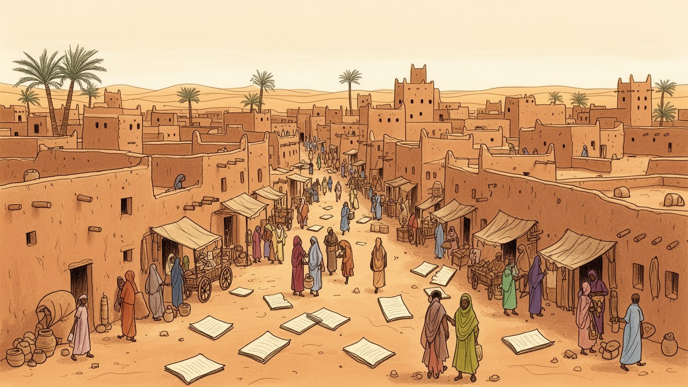
トンブクトゥはサハラ南縁とニジェール川回廊が出会う場所にあり、交易、遊牧、国家統治、武装勢力、国際支援が交差します。首都から遠い距離は自治の記憶と行政の弱さを生みます。国境も近い土地です。周辺も要です。
市場、家畜、塩や穀物の流通、修復、教育、行政、援助、観光が雇用を支えます。治安悪化で旅行者が減ると、ガイド、宿、工芸、運転手の収入は細り、若者の仕事探しや露店の商いも揺れます。ラジオ情報も大切です。
泥のモスク、学者の墓、写本、コーラン学校、金曜礼拝は、街の記憶と倫理を形づくります。スーフィー的な信仰、家族の儀礼、節度ある祭礼、修復の共同作業があり、宗教は観光資源の前に生活の暦です。学びも軸です。
訪問者は砂丘、写本、モスクを見ますが、住民には水、暑さ、医療、学校、燃料、食料価格、治安が日々の重荷です。茶を囲む会話、子どもの遊び、買い物、サッカー、観光回復と文化財保護が同じ街で深く交わります。
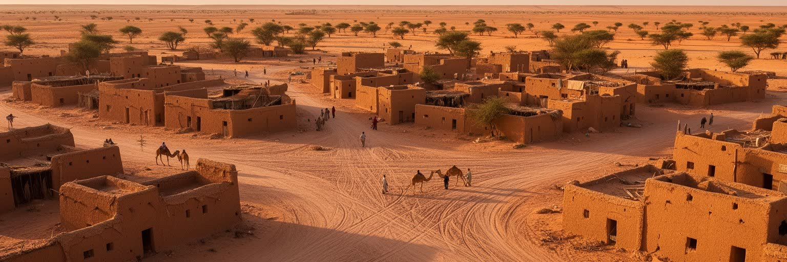
トンブクトゥの地理は、サハラ砂漠の縁とニジェール川の水運を同時に見ることで理解できます。街そのものは乾いた砂地にあり、川は少し離れたカバラ方面で港の役割を担ってきました。砂漠から来る塩、家畜、革、情報はここで穀物や布、学問、政治の世界と接続され、都市は海港ではなく内陸の中継点として栄えました。現在もこの地理は暮らしを決めます。雨は少なく、道路は季節や治安に左右され、水と燃料の確保は家計に響きます。砂ぼこり、強い日差し、川辺から届く湿った空気の差も、住民の体感する距離を変えます。川が近いことは完全な安心ではなく、港までの移動、船の運航、道路の状態、治安の確保が必要になります。トンブクトゥは地図では遠隔地に見えますが、砂漠と川の境界に置かれたことで、広い地域の動きが凝縮される都市になりました。交易路が変わり、国境管理が強まり、紛争で移動が危険になると、この地理の利点は弱点にも変わります。だから街を読むには、砂の景観だけでなく、水場、港、道路、家畜の通り道、市場へ届く物資の流れまで見る必要があります。乾いた都市の静けさは、移動の歴史と現在の不安を抱えています。港へ向かう道の安全、井戸の位置、雨季の短い変化は、学校や市場へ行く時間まで変えます。地理は背景ではなく、毎日の判断そのものになります。
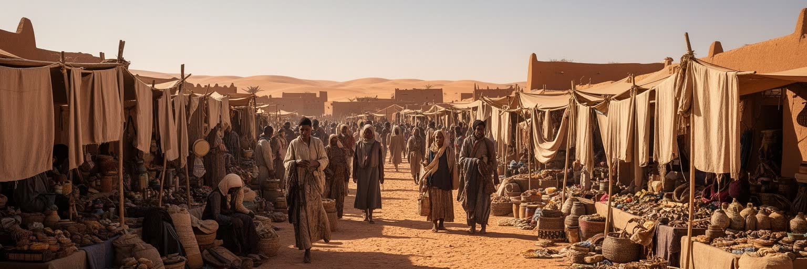
トンブクトゥの名は、サハラ交易とマリ帝国、ソンガイ帝国の記憶と結びついてきました。金、塩、奴隷、布、書物、馬、香辛料、学者、旅人が長い距離を移動し、都市は単なる商業拠点ではなく政治と知の節点になりました。塩の板を積んだ隊商、ニジェール川を行く舟、学者を支える富裕商人、遠方から来た巡礼者が、街の名声を広げました。ですがこの繁栄は平穏なロマンだけではありません。交易は支配、課税、軍事力、奴隷制、土地の権利とも結びつき、都市の富は周辺社会の不均衡の上にも築かれました。帝国が衰え、海上貿易と植民地支配が台頭すると、トンブクトゥの位置づけは変わりました。外の世界では「到達しにくい伝説の町」として語られましたが、住民にとっては市場、学問、家族、信仰が続く生活の場所でした。交易の歴史を読む時には、砂漠を越える冒険譚だけでなく、誰が荷を運び、誰が税を取り、誰が危険を負い、誰が知識を保存したのかを見る必要があります。現在のトンブクトゥにも、この過去は観光名所や地名、家系の記憶、市場の品物、商人の誇りとして残ります。茶を注ぐ店先、革細工や金属細工の小さな売り場、塩や穀物をめぐる値段の会話にも、交易都市の感覚は残っています。隊商路の輝きは失われた黄金時代ではなく、移動と交換が都市を形づくる力を示しています。歴史は遠い年代ではなく、商いの作法や人のつながりとして受け継がれています。
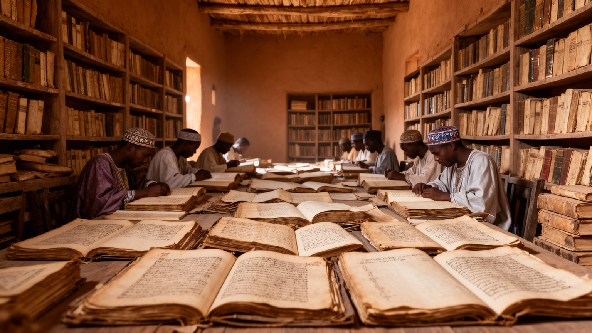
トンブクトゥを世界史の中で特別にしているのは、商業だけでなく写本とイスラム学知の厚みです。サンコーレをはじめとする学びの場では、神学、法学、天文学、数学、医学、詩、文法、商業実務に関わる知識が写され、読まれ、注釈され、家族や学者の手で受け継がれてきました。写本は図書館の静かな宝物であると同時に、契約、教育、信仰、商人の信用を支えた実用の記録でもありました。コーラン学校で声をそろえる子ども、古い紙の扱いを教える年長者、目録を整える研究者は同じ知の連鎖にいます。紙、革表紙、インク、書体、余白の書き込みには、遠い地域との交流と地元の学び方が残ります。近年、紛争と破壊の危機の中で写本を守る活動が注目されましたが、それは英雄的な救出物語だけではありません。長年にわたり家庭で保管し、湿気や虫、盗難、売買の圧力から守ってきた人々の日常的な努力があります。写本を保存するには、温度、湿度、修復技術、目録化、デジタル化、所有者の権利、地域の信頼が必要になります。トンブクトゥの知の価値は、古い文書が多いことだけではなく、アフリカの知的歴史が口承だけでなく書記文化としても豊かだったことを示す点にあります。写本を読むことは、都市を遠い砂漠の伝説から、議論し、学び、記録した人々の社会へ引き戻す行為です。保存施設での作業だけでなく、所有する家族が何を公開し、何を守るかを決める過程も重要です。知の遺産は地域の信頼なしには残せません。
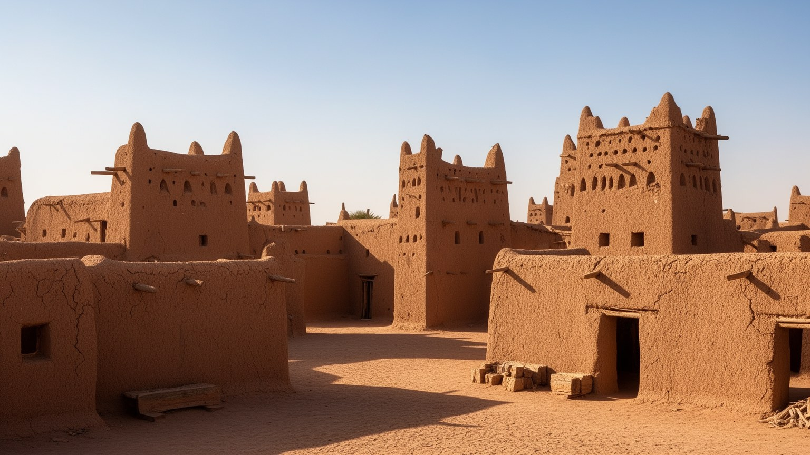
ジンガレイベル、サンコーレ、シディ・ヤヒヤのモスクは、トンブクトゥの景観と信仰を象徴します。日干し煉瓦、泥の塗り直し、木の梁、控えめな塔は、乾燥地の素材と技術が作り出した建築であり、石の記念碑とは違う維持の仕組みを持ちます。泥建築は完成したまま永遠に残るものではなく、雨、風、暑さに応じて補修され、塗り直され、共同体の手によって生き続けます。モスクは観光客の写真の対象である前に、金曜礼拝、学び、相談、葬送、地域の記憶を支える場所です。預言者生誕祭などの宗教暦も、地域の慣習と安全状況に配慮しながら人を集めます。紛争期には聖者廟や文化財が破壊され、宗教の名を掲げた暴力が地域の信仰と記憶を傷つけました。再建は建物を元に戻す作業であると同時に、住民が自分たちの歴史を取り戻す行為でもありました。泥のモスクを読む時には、美しい外観だけでなく、修復職人、宗教指導者、若者、女性の支援、国際機関、地元行政の関係を見る必要があります。建築の脆さは弱さではなく、環境に合わせて手入れし続ける文化の表れです。トンブクトゥの信仰は、古い建物の中に閉じ込められているのではなく、礼拝の声、子どもの学び、補修の手、地域の誇りとして毎日更新されています。塗り直しの季節や職人の知識は、若い世代へ技を渡す機会にもなります。雨後の補修、梁の交換、壁の乾き具合を読む目は、地域に蓄積された技術です。祈りの場は、同時に職人の学校にもなります。
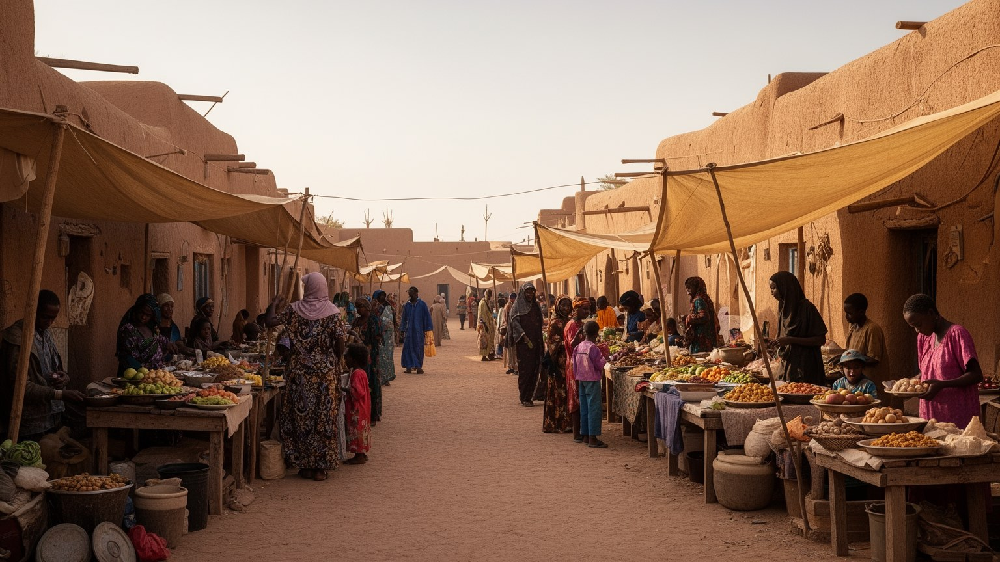
現在のトンブクトゥの経済は、かつての大交易都市というイメージほど大きくはありません。市場、家畜、穀物、塩、革細工、金属細工、行政、教育、援助機関、修復事業、観光関連の仕事が、限られた雇用を分け合っています。ラクダやヤギ、羊を扱う牧畜の世界と、定住の店、学校、役所、携帯電話、送金、燃料販売が同じ街でつながります。治安が悪化し旅行者が減ると、ガイド、宿泊業、土産物、運転手、食堂の収入はすぐに細ります。物資の輸送が難しくなれば、米、キビ、茶、砂糖、燃料の価格が上がり、家庭の食卓と学校への通学にも影響します。若者にとって、学んでも安定した仕事が少ないことは大きな不安であり、露店、修理、運搬、非公式な商いに頼る現実もあります。市場では買い物だけでなく、ラジオや携帯電話から届く治安情報、道路情報、親族の消息が交換されます。援助や国際機関は雇用と資金をもたらしますが、外部資金に依存しすぎると地域の自立は弱くなります。トンブクトゥの産業を読むには、過去の交易の栄光だけでなく、今日の市場で誰が何を売り、どの道から物が届き、どの家庭が収入を失いやすいのかを見る必要があります。小さな工房、修復の現場、家畜市場、学校の職員室、女性の売店は、都市を支える実際の経済です。送金や小口の商いは、危機の時に家計を支える命綱にもなります。
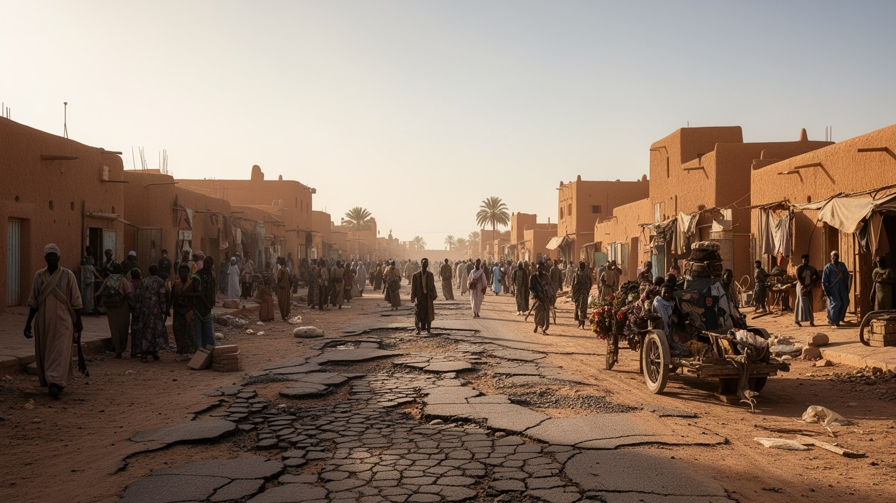
トンブクトゥを現在の都市として理解するには、マリ北部の紛争、武装勢力、国際介入、避難、文化財破壊の記憶を避けて通れません。サハラ縁辺の広い空間では、国家の統治、遊牧民の移動、民族間の不信、密輸、過激派、隣国との関係が複雑に絡みます。街が占拠され、聖者廟や写本が危険にさらされた経験は、世界の文化遺産ニュースとして知られましたが、住民にとっては学校、商売、家族の安全、移動の自由が奪われる出来事でした。治安不安は観光客を遠ざけるだけでなく、商品の輸送、医療へのアクセス、学校の継続、行政サービス、家族の再会まで妨げます。軍や国際部隊がいることは安心と緊張の両方を生み、住民は誰を信頼できるのかを日々判断しながら暮らします。紛争を語る時、街を被害の象徴だけにしてしまうと、住民の粘り強い再建や普通の生活を見落とします。修復された廟、再開した市場、授業を続ける学校、親族を迎える家庭、夕方の茶の時間や子どもの遊びは、暴力の後も都市が息をしていることを示します。同時に、記憶の傷、失業、若者の将来、避難した人の帰還、安全な道路の確保は、長く残る重荷です。トンブクトゥの平和は、軍事だけでなく、仕事、教育、信頼、文化の尊重によって支えられる必要があります。文化財の再建が進んでも、夜道の不安や移動の制限が残れば生活は戻り切りません。平和は日々の通学や商売が普通にできる状態として測られます。
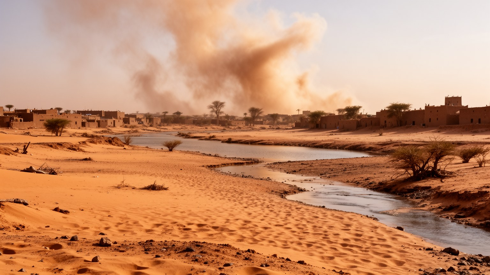
トンブクトゥの気候は、都市の時間、建築、労働、健康を強く左右します。乾いた暑さ、砂ぼこり、短い雨季、長い乾季は、外で働く人、学校へ通う子ども、高齢者、家畜、建物の維持に影響します。雨が少なければ牧草地と農地が弱り、雨が急に降れば泥建築や道路に負担がかかります。砂漠化は単に砂丘が近づく景観の話ではなく、井戸、水運、牧畜、食料価格、燃料、住まいをめぐる生活の重荷です。木を切れば燃料は得られますが、日陰と防風は失われ、遠くまで薪を集めに行く負担は家庭にのしかかります。気候変動が進めば、移動する牧畜民と定住農民の緊張も強まりやすくなります。都市の適応には、植林、砂防、井戸や水道の改善、日陰のある公共空間、断熱と通風を生かした住宅、暑さに合わせた労働時間が必要になります。トンブクトゥの泥建築は環境に合った知恵を含みますが、人口増加や物資不足、貧困の中で維持するには支援と技術が欠かせません。気候を読むことは、自然環境の厳しさを嘆くことではなく、誰が暑さを引き受け、誰が水を得られ、誰が移動できるのかを問うことです。日陰の少ない道では、わずかな木陰や壁際が休息の場所になります。夕方に子どもが球を蹴り、年配の人が涼しい場所で茶を飲む時間も、暑さに合わせた都市のリズムです。井戸や日陰の整備は、女性や子どもの時間を守ります。
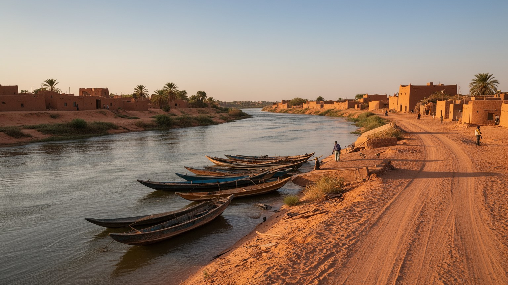
トンブクトゥの日常は、世界史の名声よりも、水、日陰、食料、家族、学校、信仰、移動の安全によって形づくられます。泥壁の家、砂地の路地、中庭、日差しを避ける室内、夕方に動き出す市場は、暑さに合わせた生活の知恵です。家族は水を確保し、燃料を買い、子どもを学校やコーラン学習へ送り、親族の行事に参加し、金曜礼拝や地域の付き合いを重ねます。医療や高等教育の選択肢は限られ、より大きな都市へ行くには費用と安全な交通が必要になります。女性は家事、売店、工芸、子育て、親族関係の維持を担うことが多く、その労働は統計に出にくいです。若者は携帯電話、ラジオ、外の情報に触れながら、地元で働くか、移住を考えるかの間で揺れます。年配の人は暑さを避ける時間や通院の道を慎重に選びます。観光客が戻ることは収入の機会ですが、住民の暮らしは観光だけでは支えられません。水道、電力、学校、診療、道路、治安、通信が安定して初めて、都市は安心して住める場所になります。トンブクトゥの生活を読むには、モスクや写本の周囲にある台所、井戸、教室、店先、茶を注ぐ手元、夕方の会話を見る必要があります。夜に暑さが弱まると、控えめな音楽や家族の集まり、サッカーの話題が店先に広がり、都市は別の表情を見せます。日常の豊かさは、大きな施設よりも小さな安心の積み重ねにあります。
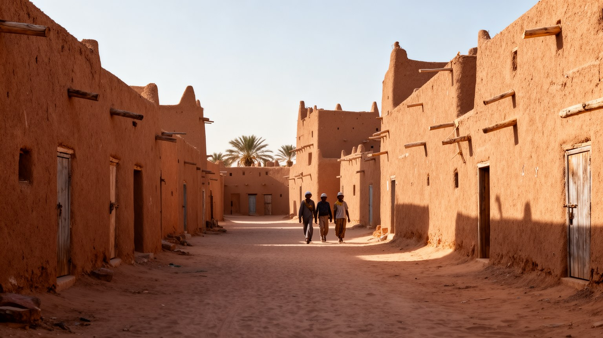
トンブクトゥは、長く「遠い伝説の町」として旅人の想像力を集めてきました。泥のモスク、写本、砂丘、隊商路の記憶、ニジェール川への道は、観光地として強い魅力を持ちます。しかし近年の治安不安は訪問を難しくし、観光の収入に頼っていたガイド、宿、工芸、運転手、食堂の仕事を大きく減らしました。観光が止まると、文化財を守る資金や若者が地元に残る理由も弱くなりやすいです。一方で、観光を急いで戻すだけでは、住民の安全や文化財の保護は守れません。遺産管理には、修復技術、地元の宗教的感情、所有者の権利、訪問者のマナー、警備、道路、情報発信が必要です。外から来る人は、古都の神秘性を消費するだけでなく、住民が文化を守るために払っている労力を理解しなければなりません。市場での買い物、革や金属の工芸、茶や簡素な食事、案内人の語りも、遺産の周辺にある生活文化です。トンブクトゥの観光は、写真を撮って終わる旅ではなく、砂漠縁辺の暮らし、学知、信仰、紛争後の再建に触れる機会です。訪れることができる時期であっても、地域社会への敬意と安全確認が欠かせません。遺産を守ることは、建物や写本を保存するだけでなく、ガイドが語り、職人が直し、子どもが学び、住民が誇りを持てる条件を整えることです。観光の未来は、数を増やすことよりも、文化と生活を傷つけない形を作れるかにかかっています。
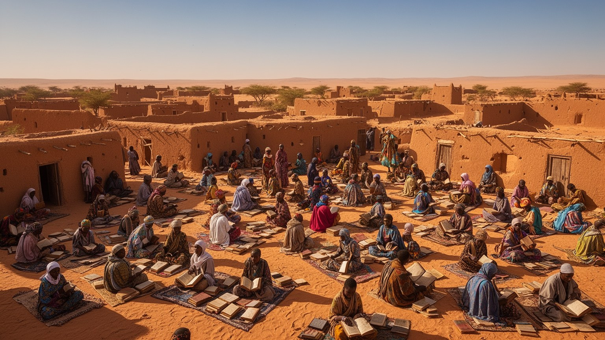
トンブクトゥ周辺の社会は、ソンガイ、トゥアレグ、アラブ系、フラニなど、複数の言語、生活様式、移動の歴史を持つ人々によって形づくられてきました。定住の商人、農民、学者、職人だけでなく、牧畜や隊商の移動を続ける人々が、街の市場と信仰の場を使ってきました。多様性は豊かさである一方、土地、水、家畜、国家権力、治安、差別をめぐる緊張も生みます。外部から一枚岩の「砂漠の町」と見ると、この複雑な関係は見えにくいです。結婚、商取引、宗教指導、家畜の移動、学校、行政手続き、言語の選択は、民族間の関係を日々調整する場です。紛争が起きると、古い不信や経済的な格差が政治化され、住民同士の信頼が壊れやすいです。だから平和を作るには、軍事や国際支援だけでなく、地域の対話、伝統的権威、若者の雇用、学校教育、公正な行政が必要になります。トンブクトゥの信仰は多くの人に共有される基盤ですが、信仰だけですべての対立が解けるわけではありません。街を読む時には、モスクの周囲に集まる人々の違いと、違いを抱えながら市場、節度ある音楽、家族の祝い、サッカー観戦を続ける力を見る必要があります。言語が違っても市場の取引や宗教行事で顔を合わせることは、壊れた信頼を少しずつ直す場になります。共存は理念ではなく、毎日の交渉で作られます。学校や市場は、その交渉を学ぶ場所でもあります。